Tan gives a concrete operating vocabulary (skill file = employee, resolver table = org chart, company brain = library plus librarian) for running an org on agents, plus one specific discipline ("never do one-off work, skillify it") that ...
This traces Tan's own vocabulary: a skill file is an employee, a resolver table is the org chart routing tasks, and the company brain is the library the skill files read and write, kept honest only by active curation (ours).
“I did the math on my output, and it's about 400X.”
said at 02:03“It's still 8X at the floor and 80X in the middle.”
said at 02:35“A skill file is an employee. It has one capability, one job, written”
said at 04:07“we only hold about seven things in our head at once. Uh, seven plus or minus two.”
said at 10:53“the AI agent can keep about three Harry Potter books sitting open in its head all at once”
said at 11:24“That's context engineering. And this is what a company brain is. It's the library plus the librarian.”
said at 12:27“a brain nobody curates becomes a garbage dump with great search”
said at 14:28“you actually need to at the end of that task, uh, skillify it”
said at 15:30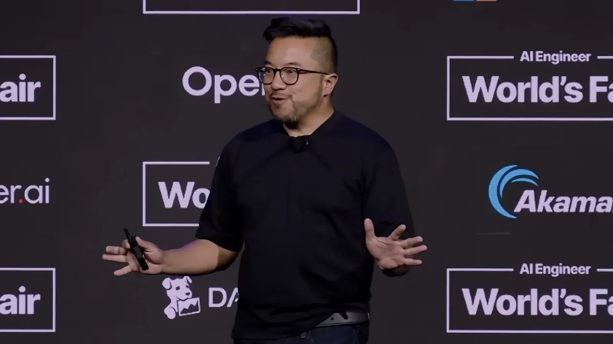
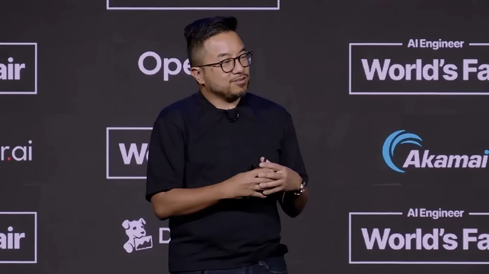
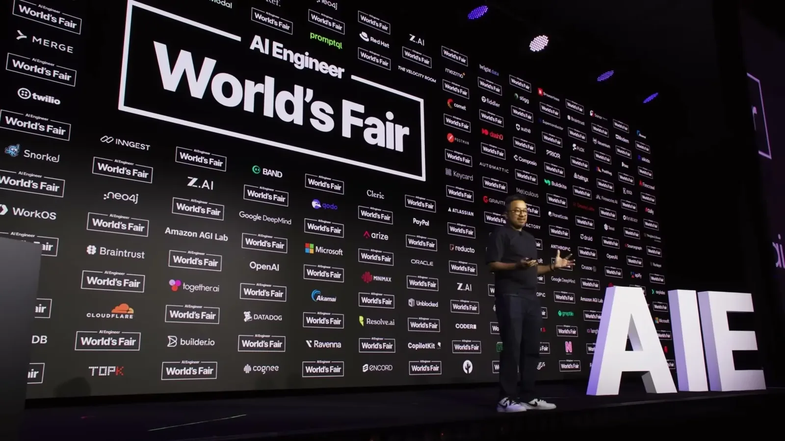
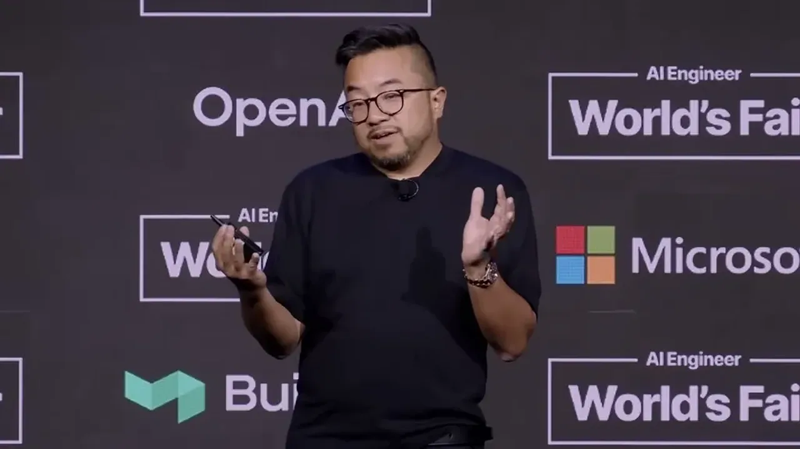
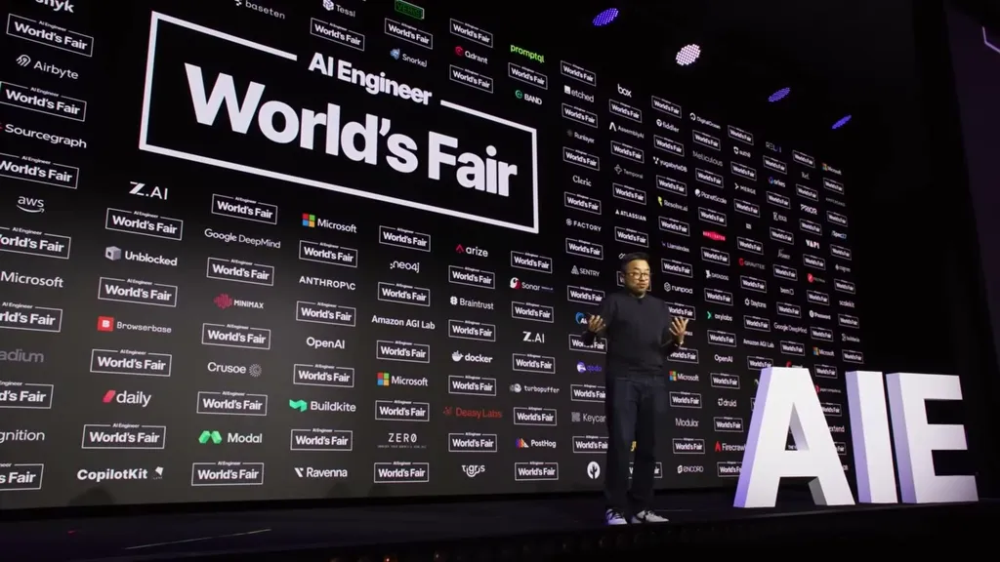
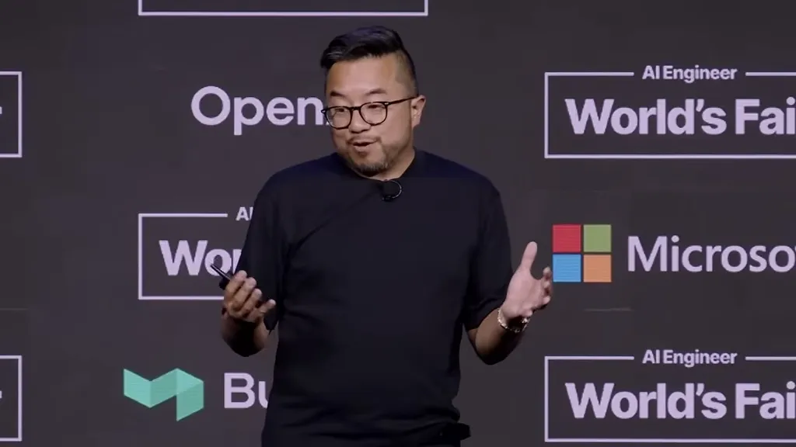
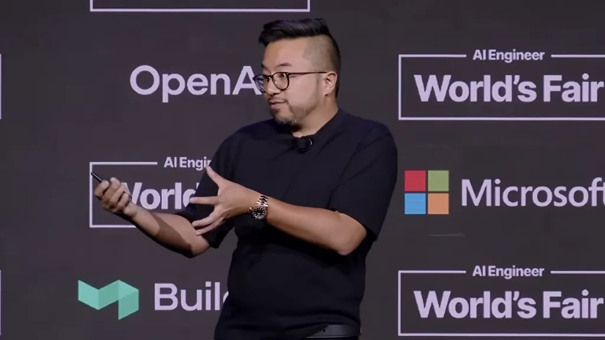
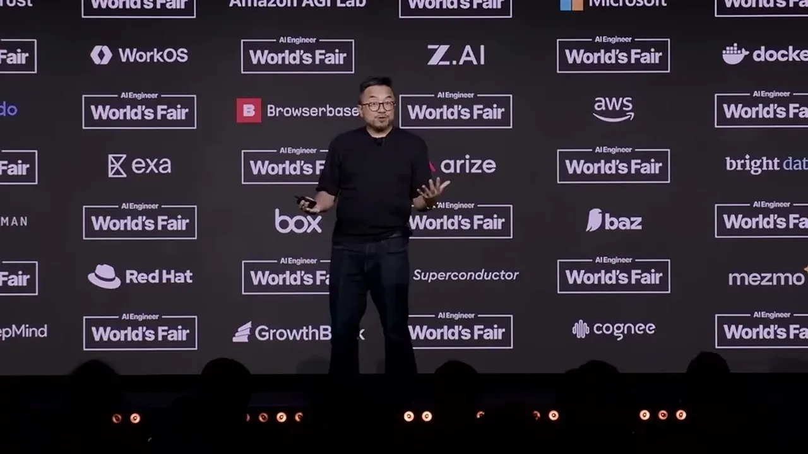
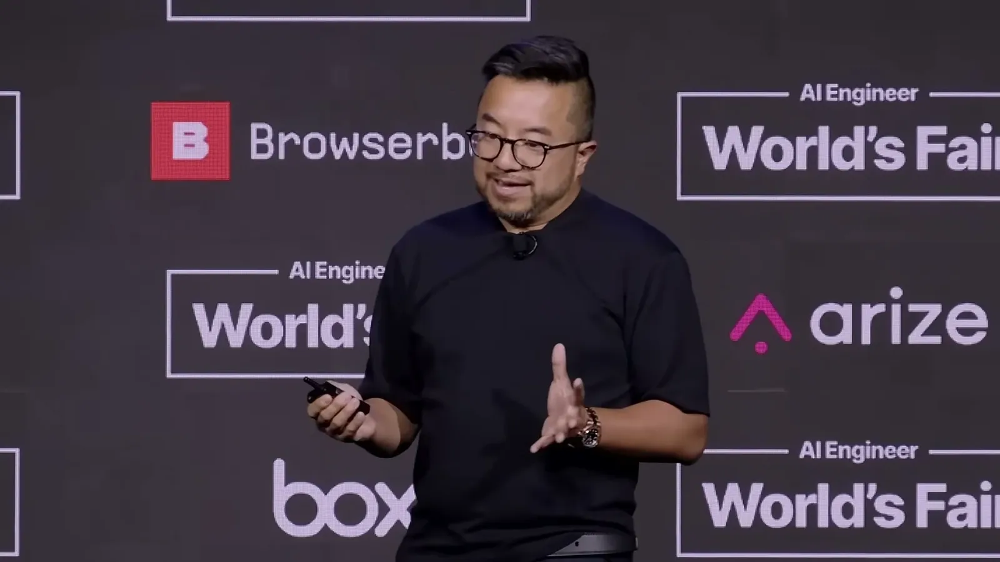
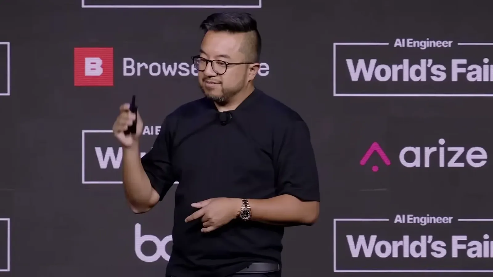
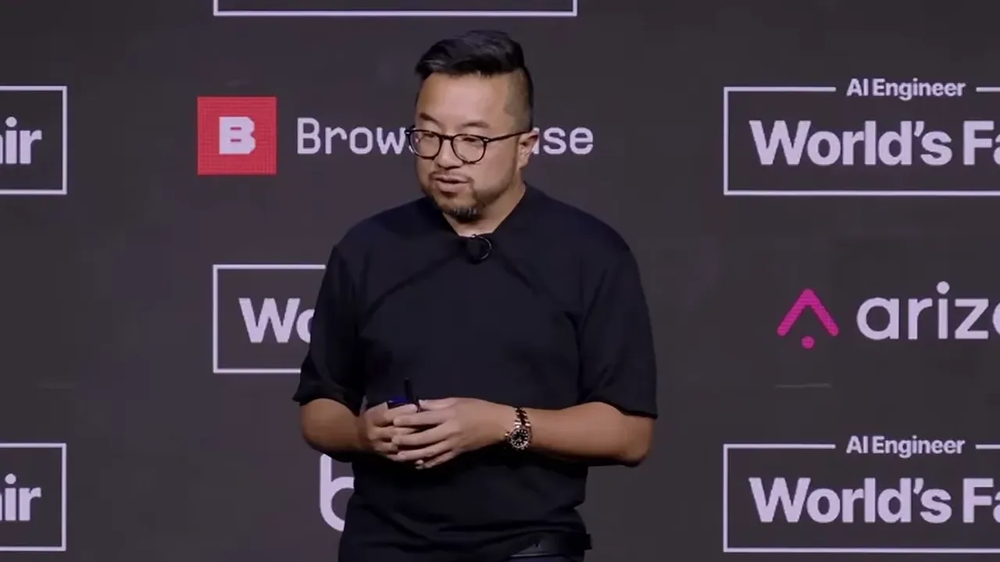
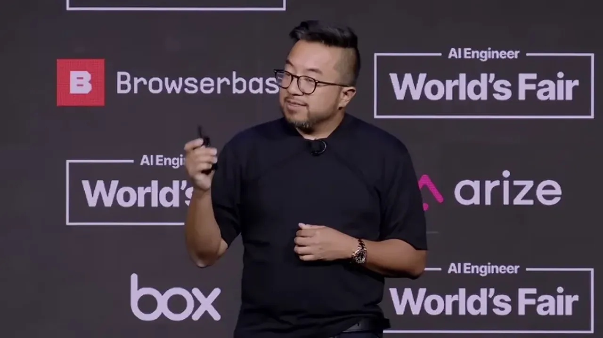
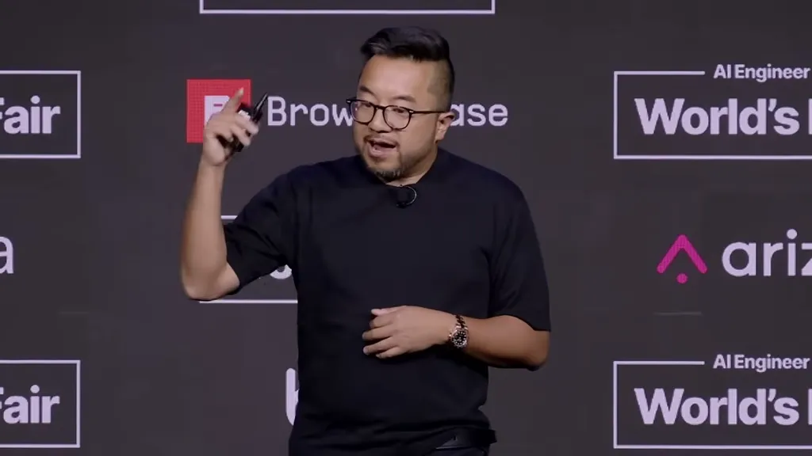
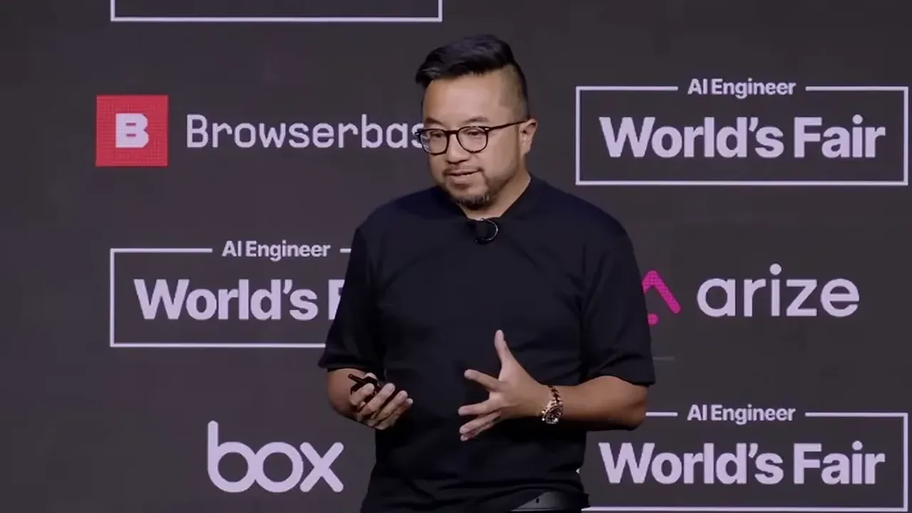
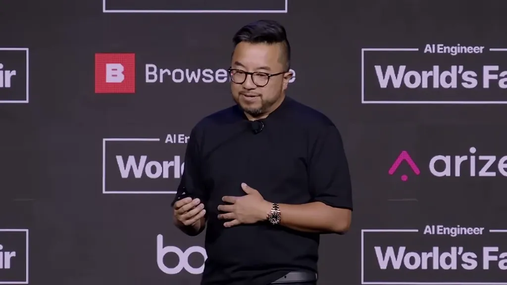
| Stance | Claim | t |
|---|---|---|
| asserts | Tan estimates his own coding output this year is roughly 400X his 2013 full-effort output, using the same underlying model as everyone else. | 02:03 |
| asserts | Even applying the harshest discount for bloated or scaffolded AI-generated code, Tan says the real multiplier is still 8X at the low end and 80X in the middle. | 02:35 |
| recommends | A skill file should be treated like a single employee with one clearly written job. | 04:07 |
| asserts | Human working memory holds only about seven items at once, a constraint that has shaped every organizational tool humans built. | 10:53 |
| asserts | An AI agent can hold roughly a million tokens of context at once, described as about three Harry Potter books open simultaneously and searchable instantly. | 11:24 |
| asserts | Context engineering is the decision of which information gets loaded for a task, and the resulting system is what Tan calls a company brain. | 12:27 |
| recommends | After fixing an agent's output once, the fix should be converted into a reusable skill file rather than repeated from scratch next time. | 15:30 |
| warns | A company brain without active curation degrades into confidently wrong retrieval rather than useful memory. | 14:28 |
Machine-readable copy embedded in this page (script#ontology) and in the corpus ontology.